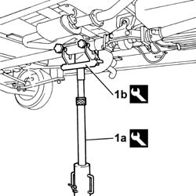
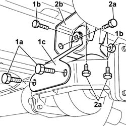

2410A54 VISCOUS JOINT FRONTOR REAR SUPPORT (SINGLE) - R.R. FOR PERMANENT VERSION
- Path
- Procedures > 24 TRANSMISSION > 2410 TRANSMISSION SHAFT > 2410A TRANSMISSION SHAFT BETWEEN THE TRANSMISSION AND THE DIFFERENTIAL > 2410A54 VISCOUS JOINT FRONTOR REAR SUPPORT (SINGLE) - R.R. FOR PERMANENT VERSION
- Kind
- repair procedure (removal / refitting; the operation number is the code)
- Applies to
- engines: 2.0 16V, 2.8 JTD 8V; all production periods; only with equipment: 4X4
- Interactive page
- https://sloeber94.github.io/elrnDB-fDct/en/#/244001054
Applies to: engines: 2.0 16V, 2.8 JTD 8V; all production periods; only with equipment: 4X4
 Removing
Removing
 Refitting
Refitting- Position the vehicle on the lift.
- Raise the lift.
1. Position a hydraulic lift (1a) with tool (1b) to support the entire transmission unit.
Description | Code | Function | |
|---|---|---|---|
1b | Support | 1.870.602.001 | Transmission stand |

Applies to: engines: 2.0 16V, 2.8 JTD 8V; all production periods; only with equipment: 4X4
1. Unscrew the bolts (1a) and bolt (1b) and remove the brackets (1c) securing the viscous coupling to the mount.
2. Undo the retaining bolts (2a) and remove viscous coupling mounting (2b).

Applies to: engines: 2.0 16V, 2.8 JTD 8V; all production periods; only with equipment: 4X4
Refitting
Removing- Fit the viscous coupling flange in its seat and tighten the bolts.
- Fit the bracket securing the viscous coupling to the mount and tighten the bolts.
- Remove the hydraulic lift with the tool supporting the entire transmission unit.
Description | Code | Function | |
|---|---|---|---|
1b | Support | 1.870.602.001 | Transmission stand |
- Lower the lift.
- Remove the vehicle from the lift.